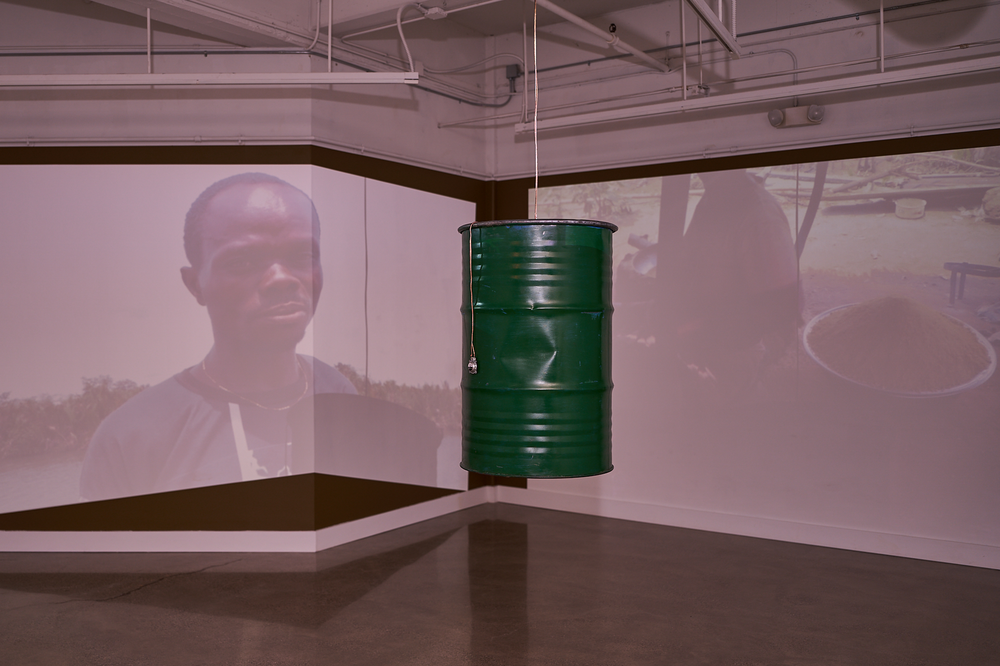

I traveled to the Niger Delta in Nigeria to capture live-action footage of the devastating impact of oil extraction on local communities. This footage was later transformed into an installation at the Buffalo Arts Studio. Central to the installation was a 55-gallon oil drum suspended from the ceiling, equipped with a transducer that converted it into a sound object. Accompanying the oil drum were projections displaying the captured footage from the region.

The immersive layout of the space invited the audience to experience environmental devastation not just as observers but as participants. The integration of sound from the drum added a visceral layer, transforming visual storytelling into an embodied encounter.

This installation aimed to highlight the environmental and social crises faced by the local Indigenous communities, fostering awareness and encouraging solutions to their plight. It served as a bridge between distant realities and immediate understanding.